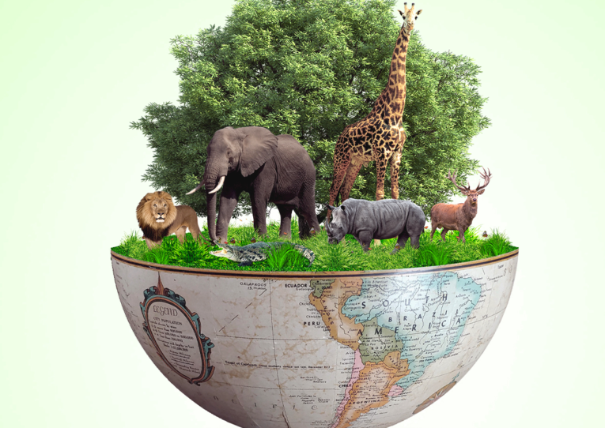
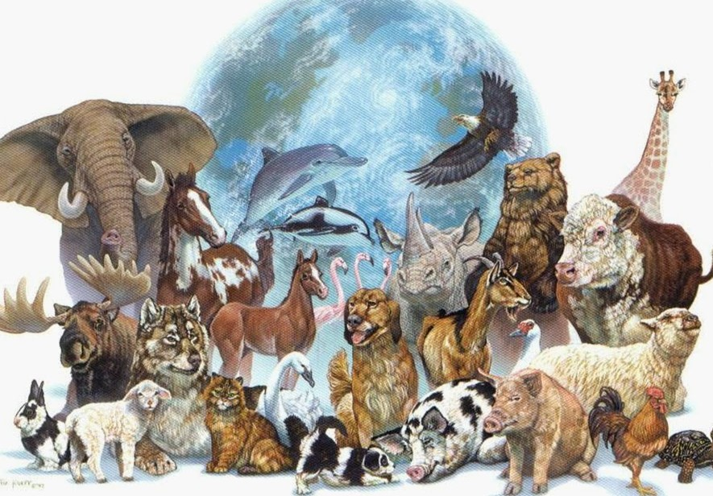

Life on Earth
Biodiversity
Biodiversity refers to the variety of life found on Earth. It includes all living organisms—plants, animals, fungi, bacteria, and even microscopic organisms like viruses and protozoa. These life forms live in a wide range of habitats such as forests, oceans, grasslands, deserts, rivers, and polar regions. Each species, no matter how big or small, plays a crucial role in maintaining the balance of nature. For example, bees help in pollination, earthworms enrich the soil, and predators help control the population of other species. Biodiversity is not only important for ecological health, but it also benefits humans directly. It provides us with food, fresh water, medicine, wood, and clean air. Many modern medicines are derived from plants and microorganisms. Unfortunately, biodiversity is under serious threat due to human activities such as deforestation, habitat destruction, pollution, overfishing, and climate change. When species go extinct, ecosystems become weaker and less able to recover from environmental changes. To protect biodiversity, we must conserve forests and oceans, reduce waste, control pollution, and protect endangered species. Biodiversity is the foundation of life on Earth. Without it, ecosystems collapse, food chains break, and life as we know it would not survive.
Ecosystems

An ecosystem is a natural system where living organisms interact with each other and with their physical environment. It includes both biotic (living) and abiotic (non-living) components. Biotic components include plants, animals, bacteria, fungi, and other microorganisms. Abiotic components include sunlight, water, air, soil, and temperature. All parts of an ecosystem are connected and depend on one another. For example, plants produce food through photosynthesis. Herbivores eat plants, carnivores eat herbivores, and decomposers break down dead matter to return nutrients to the soil. This cycle of life keeps the ecosystem balanced. Ecosystems come in many forms, such as forests, oceans, wetlands, deserts, tundras, coral reefs, and grasslands. Each one has a unique climate and set of species adapted to live there. Healthy ecosystems provide vital services like cleaning air and water, supporting biodiversity, pollinating crops, controlling pests, and regulating the Earth’s climate. Human activities such as pollution, deforestation, and urbanization often disturb ecosystems. This can lead to the loss of species, soil erosion, climate problems, and water shortages. To protect ecosystems, we need to use resources wisely, protect wildlife habitats, and reduce waste. A healthy planet depends on healthy ecosystems, and our survival is closely linked to their well-being.
Food Chain

The food chain is a sequence that shows how energy and nutrients flow from one organism to another in an ecosystem. It starts with the Sun, which provides energy to producers like plants, algae, and some bacteria. These producers convert sunlight into food through photosynthesis. Herbivores (primary consumers) feed on plants, gaining energy. Then carnivores (secondary and tertiary consumers) feed on herbivores or other carnivores. At the end of the chain are decomposers, such as fungi and bacteria, which break down dead plants and animals, returning nutrients to the soil for producers to use again. This cycle ensures that energy moves throughout the ecosystem and that nutrients are recycled. A simple food chain might look like this: Sun → Grass → Grasshopper → Frog → Snake → Eagle → Decomposer. In nature, food chains are interconnected, forming complex food webs. Every species plays an important role in maintaining balance. If one species is removed or becomes extinct, it can affect the entire food chain. Human activities such as overfishing, habitat destruction, and pollution can disrupt food chains. Protecting each link in the food chain is essential for the health of the planet. A balanced food chain helps keep ecosystems stable and supports life on Earth.
Adaptation

Adaptation is the process by which living organisms develop traits that help them survive in their specific environments. These traits can be physical (like thick fur or sharp teeth), behavioral (like migration or hunting at night), or physiological (like the ability to conserve water or breathe underwater). Over time, through natural selection, species develop adaptations that increase their chances of survival and reproduction. For example, camels have long eyelashes and humps that store fat to survive desert heat and sandstorms. Polar bears have thick fur and a layer of fat to survive freezing temperatures. Cacti store water in their thick stems to survive in dry deserts. Some fish have bioluminescence (they glow) to attract prey or mates in deep, dark oceans. Adaptation is essential for life because Earth’s environments are constantly changing. Without adaptation, species cannot cope with changes in temperature, food availability, or predators. Human activities like pollution and climate change are creating new challenges, and not all species can adapt quickly enough. That’s why many animals and plants are at risk of extinction. Understanding and respecting adaptations helps us protect wildlife and ecosystems. Adaptation is nature’s way of ensuring that life continues, even in the harshest conditions.
Humans and Life

Humans are an essential part of Earth’s living system. We depend on nature for everything—food, water, clean air, medicines, and raw materials. Over time, humans have developed advanced tools, technologies, and societies. We build cities, grow crops, domesticate animals, and create machines to improve our lives. However, these activities also affect the environment in many ways. Deforestation, pollution, climate change, and overuse of natural resources are causing harm to other species and even to ourselves. Rivers are drying, forests are shrinking, and animals are losing their homes. Air and water pollution are leading to health problems. Global warming is causing extreme weather and rising sea levels. Despite these issues, humans also have the power to make positive change. We can recycle, conserve water and energy, plant trees, use eco-friendly transport, and protect endangered species. Education and awareness play a big role in changing habits and encouraging sustainable living. Humans are the only species that can consciously shape the future of the planet. If we take care of nature, it will take care of us. Living in harmony with Earth’s systems is not just important—it is necessary for the survival of all life, including our own.
Animals
Animals are a vital part of life on Earth. They live in nearly every habitat, from deep oceans and high mountains to dense forests, grasslands, deserts, and icy polar regions. Animals come in all shapes and sizes, from tiny ants and bees to massive elephants and blue whales. Scientists classify animals into various groups based on their features, such as mammals, birds, reptiles, amphibians, fish, and insects. Each animal plays an important role in nature. Herbivores eat plants, carnivores eat other animals, and omnivores eat both. Many animals help with pollination, seed dispersal, pest control, and maintaining balance in the food chain. Animals also provide humans with food, clothing, companionship, and labor. Sadly, many animals are under threat due to habitat loss, hunting, pollution, and climate change. Forests are being cut down, oceans are polluted, and rising temperatures are affecting many species’ survival. Some animals are already endangered or extinct. It is our responsibility to protect animals and their habitats. By conserving nature, reducing pollution, and supporting wildlife protection programs, we can ensure that animals continue to thrive on Earth. A world rich with animal life is not only beautiful—it is essential for a balanced planet.